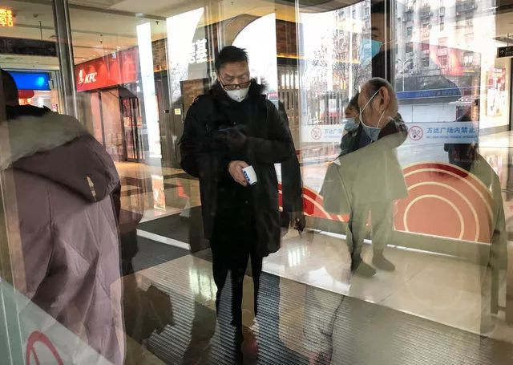
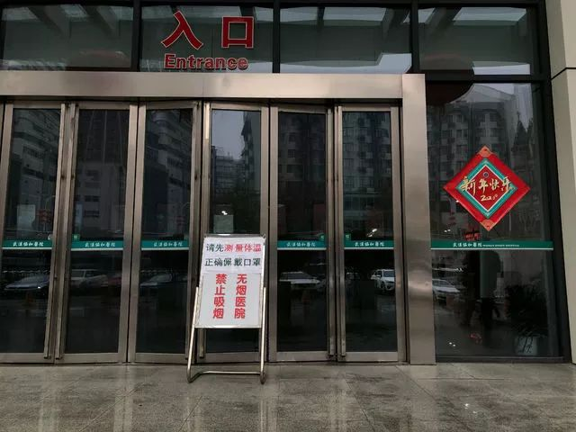
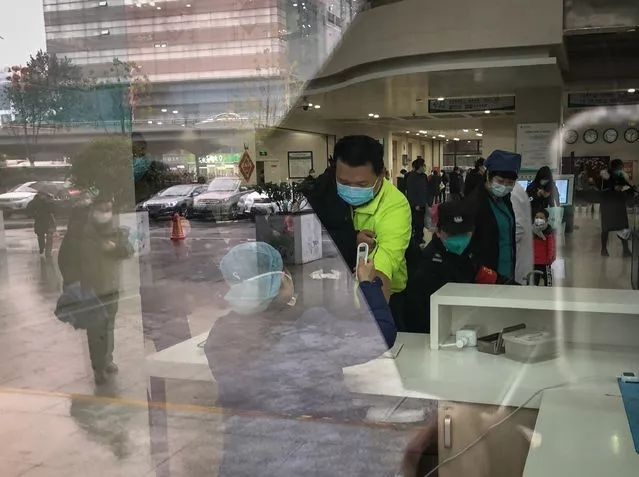
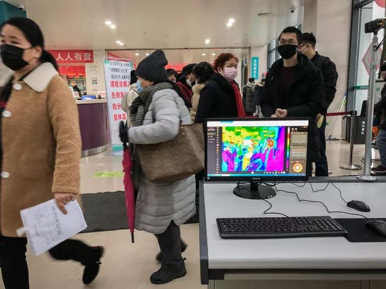
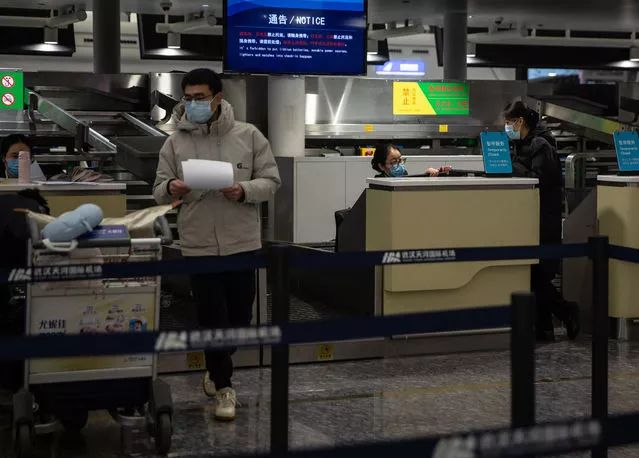

时疫琐记
原文链接 备份链接 今年回武汉的票特别好买，几乎不用抢，就很轻易地买到了北京西站到武汉站的票。到武汉的时间是晚上八点半，就在附近的旅馆住一夜，第二天去汉口的青年路客运站坐长途客车回武穴。 我把这个计划告知我朋友后，朋友说：“不要在武汉逗 …

1月22日，湖北武汉，菱角湖万达广场开门营业前，商场对工作人员逐一进行体温检测。中青报·中青网记者 李峥苨/摄

1月22日，湖北武汉，菱角湖万达广场开门营业前，商场对工作人员逐一进行体温检测。中青报·中青网记者 李峥苨/摄

1月22日，武汉协和医院门诊大厅，提示前来就诊的患者佩戴口罩、测量体温的文字随处可见。中青报·中青网记者 李峥苨/摄

1月22日，武汉协和医院门诊大厅，一位患者来到入口旁设立的体温检测点测体温。门诊大厅入口处设立了红外线测温仪，初步检测出体温高的患者需到一旁的监测点接受二次测温。中青报·中青网记者 李峥苨/摄

1月22日，武汉协和医院门诊大厅，红外线测温仪实时检测进入门诊大厅人流的体温。中青报·中青网记者 李峥苨/摄

1月22日，武汉协和医院门诊大厅外，一个孩子和家长玩起了扳手腕游戏。中青报·中青网记者 李峥苨/摄

1月22日，武汉中山公园地铁站，工作人员对通道进行消毒。中青报·中青网记者 李峥苨/摄

1月22日，武汉地铁2号线，开往汉口火车站和天河国际机场方向的地铁车厢内，大多数乘客戴着口罩。中青报·中青网记者 李峥苨/摄

1月21日晚，武汉天河国际机场，一个前往越南芽庄的旅行团集合后准备出发。据介绍，目前在该机场乘坐国际航班的旅客需在海关处检测体温。中青报·中青网记者 李峥苨/摄

1月21日晚，武汉天河国际机场，几个出境旅行团在等待通过安检和测体温。根据机场航班信息，当天有20余个国际航班从该机场出发。中青报·中青网记者 李峥苨/摄

1月21日晚，武汉天河国际机场，与旅客有直接接触的机场工作人员都佩戴了口罩。中青报·中青网记者 李峥苨/摄
（编辑：曲俊燕）
作者:李峥苨
中国青年报·中青在线出品
微信编辑 | 陈轶男

觉得好看请点这里
原文链接 备份链接 今年回武汉的票特别好买，几乎不用抢，就很轻易地买到了北京西站到武汉站的票。到武汉的时间是晚上八点半，就在附近的旅馆住一夜，第二天去汉口的青年路客运站坐长途客车回武穴。 我把这个计划告知我朋友后，朋友说：“不要在武汉逗 …
原文链接 备份链接 发热门诊排起长龙的就诊队伍似乎在宣告，这座城市正面临一次巨大的挑战。 全文4742字，阅读约需9分钟 ▲湖北各地出现口罩防护服等防疫物资短缺 拟请求国家支援。新京报我们视频出品（ID：wevideo） 距离除夕还有3 …
原文链接 备份链接 1月20日官方公布的感染武汉新型冠状病毒患者激增之前，武汉街头看起来和平时没多少不同。从1月20日开始，戴口罩的人突然多了起来。但其实这场病毒的袭击从大约一个月前就开始了，直到今天才引起更大范围的注意。 记者 | …
原文链接 备份链接 2020-01-22 22:02:22来源： 财新网作者：黄蕙昭责任编辑：任波 武汉市决定即日（22日）起全市启动进出城道口重大疫情排查防控工作，力保疫情排查“不漏一车、不漏一人” 责任编辑：任波 | 版面编辑：张翔宇
原文链接 备份链接 21.01.2020本文字数：3771，阅读时长大约6.5分钟 导读：“武汉肺炎是否人传人”这个问题，一直受外界关注。在官方没有明确确认之前，公众的自我防护也由此减弱，直到北京、上海、深圳出现新发病例，公众才开始真正 …